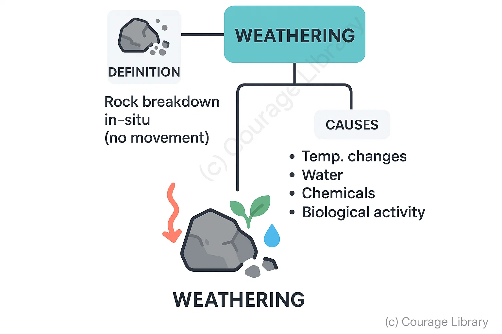
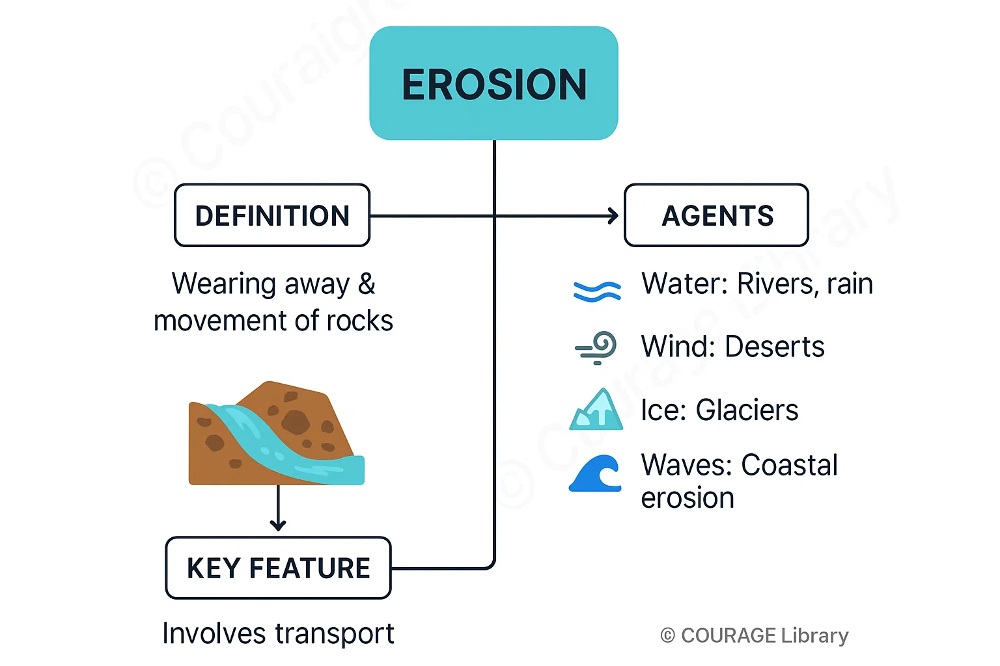
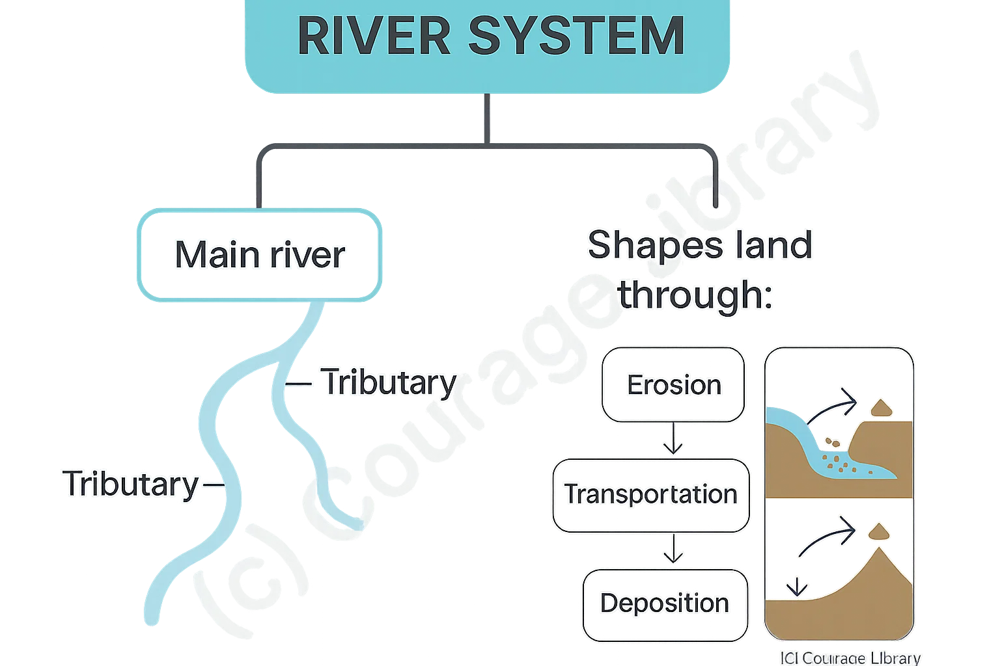
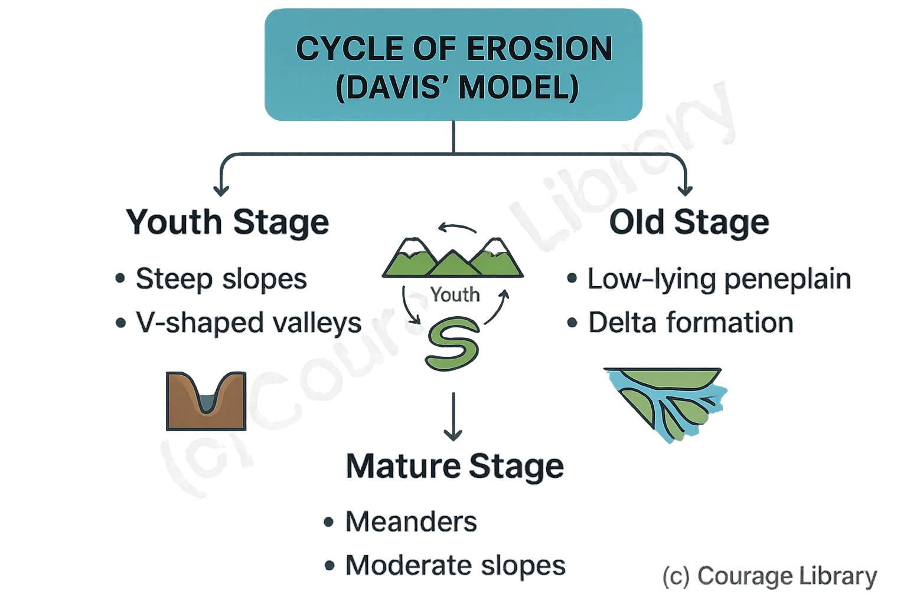

SSC CGL - Detailed Guide 2025
Self-Paced Course
Landforms and Their Evolution
Reference: Lucent GK, NCERT Class 6–12
Weathering and Erosion
Weathering
- The breakdown and disintegration of rocks in-situ (without movement).
- Caused by temperature changes, water, chemicals, and biological activity.

Types of Weathering:
| Type | Process | Example/Effect |
|---|---|---|
| Mechanical | Physical breakdown without chemical change (e.g., freeze-thaw, exfoliation) | Rock splitting in deserts or cold climates |
| Chemical | Decomposition due to chemical reactions (e.g., oxidation, carbonation) | Limestone dissolving due to acid rain |
| Biological | Action of living organisms (plants, animals, microbes) | Roots breaking rocks, lichens secreting acids |

Erosion
- Wearing away and removal of rock materials by natural agents like water, wind, glaciers, and waves.
- Always involves movement from one place to another.
- Erosion Agents:
- Water (rivers, rainfall)
- Wind (especially in deserts)
- Ice (glaciers)
- Sea waves (coastal erosion)
Types of Landforms
| Type | Characteristics | Examples |
|---|---|---|
| Mountains | High relief, steep slopes, formed by tectonic forces or volcanism | Himalayas (fold), Aravallis (residual), Kilimanjaro (volcanic) |
| Plateaus | Elevated flatlands, extensive area, steep sides | Deccan Plateau, Colorado Plateau |
| Plains | Flat or gently rolling areas, formed by deposition | Indo-Gangetic Plain, Mississippi Plain |
| Valleys | Elongated depressions formed by rivers or tectonic activity | Rift Valley, Ganga Valley |
Classification of Mountains
Type
Formation Process
Examples
Fold
Mountains
Compression of tectonic
plates
Himalayas, Alps, Andes
Block
Mountains
Created by faulting
Black Forest, Vosges
Volcanic
Mountains
Built by volcanic
material
accumulation
Mount Fuji, Kilimanjaro
Residual
Mountains
Remains of old
mountains after
erosion
Aravalli Hills
| Type | Formation Process | Examples |
|---|---|---|
| Fold Mountains | Compression of tectonic plates | Himalayas, Alps, Andes |
| Block Mountains | Created by faulting | Black Forest, Vosges |
| Volcanic Mountains | Built by volcanic material accumulation | Mount Fuji, Kilimanjaro |
| Residual Mountains | Remains of old mountains after erosion | Aravalli Hills |
River System and Erosion Cycles
River System
- A river system includes the main river and its tributaries.
- Rivers shape land through erosion, transportation, and deposition.

Stages of a River:
| Stage | Features | Examples |
|---|---|---|
| Youth | Steep gradient, vertical erosion | Waterfalls, gorges |
| Mature | Lateral erosion, meanders | Meanders, ox-bow lakes |
| Old Age | Deposition, broad valleys | Deltas, levees |

Cycle of Erosion (Davis’ Model)
- Youth Stage: Steep slopes, V-shaped valleys
- Mature Stage: Meanders, moderate slopes
- Old Stage: Low-lying peneplain, delta formation
River Landforms by Erosional Agent
| Agent | Erosional Landforms | Depositional Landforms |
|---|---|---|
| River | V-shaped valleys, gorges, waterfalls | Floodplains, deltas, oxbow lakes |
| Glacier | U-shaped valleys, moraines | Outwash plains, drumlins |
| Wind | Deflation hollows, mushroom rocks | Sand dunes, loess |
| Sea Waves | Cliffs, caves, arches | Beaches, spits, bars |
Developed By Jan Mohammad
Next
Start Your SSC CGL Journey Now!
Join Courage Library to experience disciplined study and expert support.
Be a Couragian!